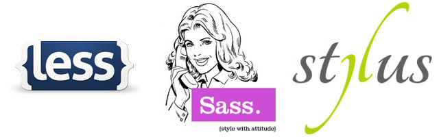
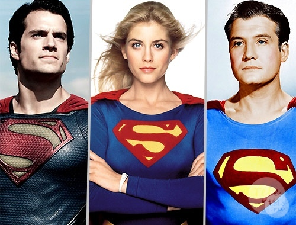

CSS
Препроцессоры
Зачем ?
Простой CSS


CSS-препроцессоры
3 самых популярных
CSS-препроцессора

Какой выбрать?
На самом деле...
Любой!
Они все хороши!
В чем разница?
80/20
80% возможностей SASS, LESS и Stylus одинаковые,
20% отличаются.
Синтаксис
LESS и SCSS
body {
background-color: #efefef;
font-size: 100% Helvetica, sans-serif;
}
SASS
body
background-color: #efefef
font-size: 100% Helvetica, sans-serif
Stylus
body
background-color #efefef
font-size 100% Helvetica, sans-serif
Stylus поддерживает все 3 синтаксиса
Аналогичные функции
- Переменные
- Вложенные селекторы
- Раскрытие импортов
- Вычисления
- Миксины
- Работа с цветом
- Условия и циклы
Переменные
SASS
$button-background: #27adec
.btn
background: $button-background
LESS
@button-background: #27adec;
.btn {
background: @button-background;
}
Stylus
button-background = #27adec
.btn
background button-background
Вложенные селекторы
SASS
.nav
margin: 0
a
color: #00f
&:hover
text-decoration: underline
&__item
padding: 10px
&:hover
color: #fff
.ie8 &
padding: 20px
LESS и SCSS
.nav {
margin: 0;
a {
color: #00f;
&:hover {
text-decoration: underline;
}
}
&__item {
padding: 10px;
&:hover {
color: #fff;
}
}
.ie8 & {
padding: 20px;
}
}
Stylus
.nav
margin 0
a
color #00f
&:hover
text-decoration underline
&__item
padding 10px
&:hover
color #fff
.ie8 &
padding 20px
LESS и SCSS
.nav {
margin: 0;
a {
color: #00f;
&:hover {
text-decoration: underline;
}
}
&__item {
padding: 10px;
&:hover {
color: #fff;
}
}
.ie8 & {
padding: 20px;
}
}
CSS
.nav{
margin: 0;
}
.nav a {
color: #00f;
}
.nav a:hover {
text-decoration: underline;
}
.nav_item {
padding: 10px;
}
.nav_item:hover {
color: #fff;
}
.ie8 .nav {
padding: 20px;
}
Раскрытие импортов
@import
_reset.scss
html,
body,
ul,
ol {
margin: 0;
padding: 0;
}
base.scss
@import 'reset';
body {
font: 100% Helvetica, sans-serif;
background-color: #efefef;
}
Вычисления
Sass, LESS, & Stylus
body {
margin: (14px/2);
top: 50px + 100px;
right: 100px - 50px;
left: 10 * 10;
}
Миксины
LESS
Без параметров
bordered {
border: 1px solid #000;
border-top-color: #444;
border-bottom-color: #444;
}
#main {
.bordered;
}
С параметрами
.transform-scale (@x, @y) {
-webkittransform: scale(@x, @y);
transform: scale(@x, @y);
}
.main {
.transform-scale(2,3);
}
SASS
=transform-scale($x: 2, $y: 2)
-webkit-transform: scale($x, $y)
transform: scale($x, $y)
.main
+transform-scale(2, 3)
SCSS
@mixin transform-scale ($x: 2, $y: 2){
-webkit-transform: scale($x, $y);
transform: scale($x, $y);
}
.main{
@include transform-scale(2,3)
}
Stylus
transform-scale (x, y)
-webkit-transform scale(x, y)
transform scale(x, y)
.main
transform-scale(2,3)
extend
SASS
.borders
border: 1px solid #efefef
padding: 10px
p
@extend .borders
font-size: 20px
ul, ol
@extend .borders
text-transform: uppercase
Less
borders {
border: 1px solid #efefef;
padding: 10px;
}
p {
&:extend(.borders);
font-size: 20px;
}
ul, ol {
&:extend(.borders);
text-transform: uppercase;
}
STyLUS
.borders
border 1px solid #efefef
padding 10px
p
@extend .borders
font-size 20px
ul, ol
@extend .borders
text-transform uppercase
CSS
.borders, p, ul, ol {
border: 1px solid #efefef;
padding: 10px;
}
p {
font-size: 20px;
}
ul, ol {
text-transform: uppercase;
}
@extend + Placeholder
Sass
%borders
border: 1px solid #efefef
padding: 10px
p
@extend %borders
font-size: 20px
ul, ol
@extend %borders
text-transform: uppercase
%borders
border: 1px solid #efefef
padding: 10px
p
@extend %borders
font-size: 20px
ul, ol
@extend %borders
text-transform: uppercase
Stylus
%borders
border 1px solid #efefef
padding 10px
p
@extend %borders
font-size 20px
ul, ol
@extend %borders
text-transform uppercase
CSS
p, ul, ol {
border 1px solid #efefef;
padding 10px;
}
p{
font-size 20px;
}
ul, ol {
text-transform uppercase;
}
Функции
SASS
$grid-columns: 12
$grid-width: 960px
@function calculate-column-width($cols)
@return $grid-width / $grid-columns * $cols / $grid-width * 100%
#container
margin: 0 auto
width: 100%
article
float: left
width: calculate-column-width(8)
aside
float: right
width: calculate-column-width(4)
LESS
@grid-columns: 12;
@grid-width: 960px;
.calculate-column-width(@cols) {
width: (((@grid-width / @grid-columns) * @cols / @grid-width) * 100%);
}
#container {
margin: 0 auto;
width: 100%;
}
article {
float: left;
.calculate-column-width(8);
}
aside {
float: right;
.calculate-column-width(4);
}
Stylus
grid-columns 12
grid-width 960px
calculate-column-width(cols)
((grid-width / grid-columns) * cols / grid-width) * 100%)
#container
margin 0 auto
width 100%
article
float left
width calculate-column-width(8)
aside
float right
width calculate-column-width(4)
CSS
#container {
margin: 0 auto;
width: 100%;
}
article {
float: left;
width: 66.66667%;
}
aside {
float: right;
width: 33.33333%;
}
Работа с цветом
SASS
rgb($red, $green, $blue)
hsl($hue, $saturation, $lightness)
hue($color)
saturation($color)
lightness($color)
adjust-hue($color, $degrees)
lighten($color, $amount)
darken($color, $amount)
saturate($color, $amount)
desaturate($color, $amount)
grayscale($color)
complement($color)
invert($color)
...
LESS
rgb(@red, @green, @blue);
hsl(@hue, @saturation, @lightness);
hue(@color);
saturation(@color);
lightness(@color);
saturate(@color, @amount);
desaturate(@color, @amount);
lighten(@color, @amount);
darken(@color, @amount);
fadein(@color, @amount);
fadeout(@color, @amount);
spin(@color, @angle);
mix(@color, @angle);
grayscale(@color);
contrast(@color, @dark, @light, threshold);
...
STYLUS
rgba(color, alpha)
lighten(color, amount)
darken(color, amount)
desaturate(color, amount)
saturate(color, amount)
invert(color)
hue(color)
saturation(color);
lightness(color);
...
Условия и циклы
SASS
@if
@else if
@else
@then
@for
@each
@while
LESS
when
Stylus
if
else if
else
unless
for
Условия
SASS
=buttons($color, $type)
@if $type == "flat"
background-color: $color
@else if $type == "gradient"
background: linear-gradient($color, darken($color, 20%))
@else if $type == "glossy"
background: linear-gradient($color 50%, darken($color, 20%) 50%)
@else
background-color: $color
.button
+buttons(green, glossy)
SCSS
@mixin buttons($color, $type) {
@if $type == "flat" {
background-color: $color;
}
@else if $type == "gradient" {
background: linear-gradient($color, darken($color, 20%));
}
@else if $type == "glossy" {
background: linear-gradient($color 50%, darken($color, 20%) 50%);
}
@else {
background-color: $color;
}
}
.button {
@include buttons(green, glossy);
}
LESS
.buttons (@color, @type) when (@type == "flat") {
background-color: @color;
}
.buttons (@color, @type) when (@type == "gradient") {
background: linear-gradient(@color, darken(@color, 20%));
}
.buttons (@color, @type) when (@type == "glossy") {
background: linear-gradient(@color 50%, darken(@color, 20%) 50%);
}
.button {
.buttons(green, glossy);
}
Stylus
.buttons(color, type)
if type == "flat"
background-color color
else if type == "gradient"
background linear-gradient(color, darken(color, 20%))
else if type == "glossy"
background linear-gradient(color 50%,darken(color, 20%) 50%)
else
background-color color
.button
buttons(green, glossy)
CSS
.button {
background: linear-gradient(#008000 50%, #001a00 50%);
}
Циклы
SASS
@for $i from 1 to 5
.border-#{$i}
border: $ipx solid black
Stylus
for i in (1..5)
.border-{i}
border (i)px solid black
CSS
.border-1 {
border: 1px solid black;
}
.border-2 {
border: 2px solid black;
}
.border-3 {
border: 3px solid black;
}
.border-4 {
border: 4px solid black;
}
each loop – Sass
$emotions: happy sad excited
@each $emotion in $emotions
.feeling-#{$emotion}
background-image: url("images/feeling-#{$emotion}")
css
.feeling-happy {
background-image: url("images/feeling-happy");
}
.feeling-sad {
background-image: url("images/feeling-sad");
}
.feeling-excited {
background-image: url("images/feeling-excited");
}
Media Queries
SASS
$small-breakpoint: 480px
$medium-breakpoint: 768px
$large-breakpoint: 1024px
aside
width: 100%
@media (min-width: $small-breakpoint)
width: 100px
float: right
@media (min-width: $medium-breakpoint)
width: 200px
@media (min-width: $large-breakpoint)
width: 400px
Less
@small-breakpoint: 480px;
@medium-breakpoint: 768px;
@large-breakpoint: 1024px;
aside {
width: 100%;
@media (min-width: @small-breakpoint) {
width: 100px;
float: right;
}
@media (min-width: @medium-breakpoint) {
width: 200px;
}
@media (min-width: @large-breakpoint) {
width: 400px;
}
}
Stylus
ll-breakpoint 480px
medium-breakpoint 768px
large-breakpoint 1024px
aside
width 100%
@media (min-width small-breakpoint)
width 100px
float right
@media (min-width medium-breakpoint)
width 200px
@media (min-width large-breakpoint)
width 400px
CSS
aside {
width: 100%;
}
@media (min-width: 480px) {
aside {
width: 100px;
float: right;
}
}
@media (min-width: 768px) {
aside {
width: 200px;
}
}
@media (min-width: 1024px) {
aside {
width: 400px;
}
}
@content – Sass
=respond-to($name)
@if $name == small-screen
@media (min-width: 320px)
@content
@if $name == large-screen
@media (min-width: 960px)
@content
aside
width: 25%
+respond-to(small-screen)
width: 100%
@content – Scss
@mixin respond-to($name) {
@if $name == small-screen {
@media (min-width: 320px) {
@content;
}
}
@if $name == large-screen {
@media (min-width: 960px) {
@content;
}
}
}
aside {
width: 25%;
@include respond-to(small-screen) {
width: 100%;
}
}
css
aside {
width: 25%;
}
@media (min-width: 320px) {
aside {
width: 100%;
}
}
Hach map
SCSS
$icons: (
home: e601,
about: e602,
services: e603
);
@each $icon-name, $icon-keycode in $icons {
.icon-#{$icon-name} {
&:before {
content: "#{$icon-keycode}";
}
}
}
SASS
$icons: (home: e601, about: e602, services: e603)
// запись с столбик вызовет ошибку
@each $icon-name, $icon-keycode in $icons
.icon-#{$icon-name}
&:before
content: #{$icon-keycode}
STYLUS
icons = {
home: e601,
about: e602,
services: e603
}
for icon-name, icon-keycode in icons {
.icon-{icon-name} {
&:before {
icon-keycode = "" + icon-keycode + "";
content: icon-keycode;
}
}
}
CSS
.icon-home:before {
content: "\e601";
}
.icon-about:before {
content: "\e602";
}
.icon-services:before {
content: "\e603";
}
Ссылки:
Светлана Пилипенко,
EPAM Systems.
- @mirantel
- github.com/mirantel
- Skype: magi-mirantel